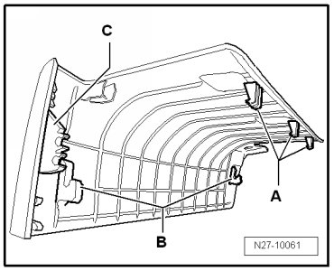
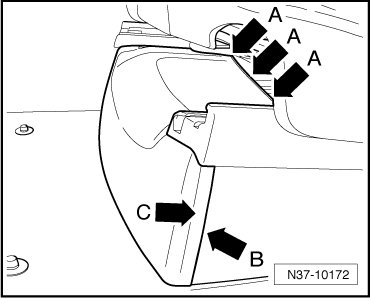
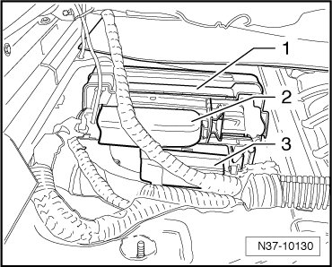
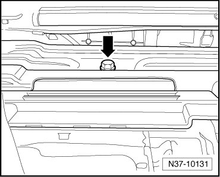
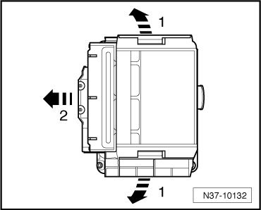

Transmission Control Module
Transmission Control Module
Special tools, testers and auxiliary items required
• Torque wrench (VAG 1331)
• Vehicle diagnostic, testing, and information system (VAS 5051)
Removing
- Before removing the Transmission Control Module (TCM) (J217), the control module identification as well as the coding must be queried from the control module.
• To prevent damage to the front trim under the right front seat, the retaining tabs on the trim are displayed in the following illustration.
• The retaining tabs - A - grab behind a crossmember under the seat. The trim must be pushed down and back at the same time. Hold the trim in this position and pull upward in the area of the retaining tabs - A - to release them.

• The retaining tabs - B - grab in the recesses of the crossmember in front of the seat. These are released by pushing down and pulling forward.
• The retaining tabs - C - are clipped into the side trim of the seat and are released by pulling forward.
- Move the seat to the most rear and upward position.
- Release the retaining tabs - arrows A - by pressing down and pushing rearward at the same time. In this position, lift the trim in the area of the retaining tabs - arrows A -.

- Press the trim down and pull forward at the same time. Thereby the retaining tabs - arrows B - and - arrows C - are released.
- Move the seat to the most front and upward position.
- The procedure for disconnecting batteries must absolutely be obeyed.
- Disconnect battery ground (GND) cable with ignition switched off.
Located in the housing - 1 - is the TCM (J217) and the differential control module (J646).

- Release and pull off the connectors from differential control module (J646) - 2 - and TCM (J217) - 3 -.
- Remove bolt - 1 - and remove housing with control modules from the mounting.

- Pull retaining tabs outward - arrows 1 - and pull control module out from the housing - arrows 2 -.

Installing
Installation is performed in the reverse order of removal. Pay attention to the following:
- Verify the previous coding, and code the new control module.
- Install the seat trim.
- Observe the work sequence after connecting the battery.